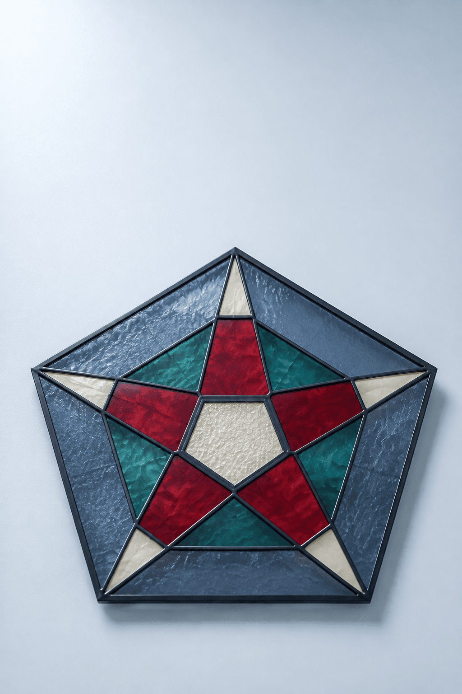

90 초
유리 작업 · 연습
점을 이어 대각선을 그어요
표시된 점을 누른 채 다른 점까지 끌어 보세요.
잠근 유리 · 목표 8장0 / 8
연속 잠금0
점수0
남은 유리

유리 작업실 / 01
별나와
꼭짓점을 이어라
4학년 2학기
다각형 · 90초
다각형 · 90초
손으로 하는 유리 연습
점과 점을 직접 이어요
- 1표시된 꼭짓점에서 다른 꼭짓점까지 끌어 보세요.
- 2이웃하지 않은 점을 이으면 대각선이 홈에 끼워져요.
- 3삼각형·굽은 선·각이 다른 판은 가운데에서 밖으로 밀어요.
도움말을 닫고 작업등을 켜면, 첫 판이 멈춰서 손가락 길을 보여 줘요.
◇
0